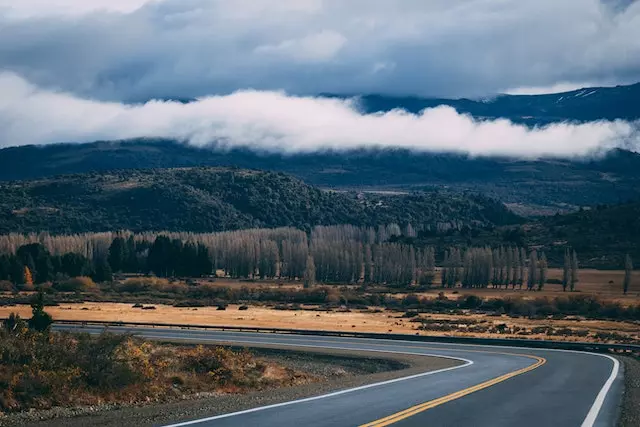
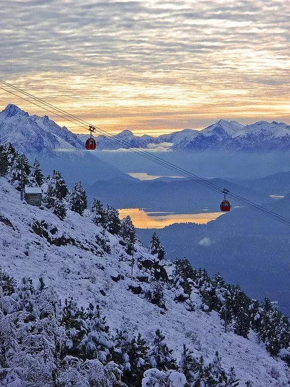
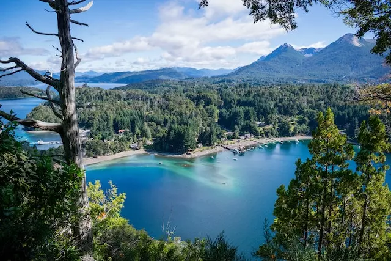

BARILOCHE
Descubrí la belleza natural de Bariloche, un paraíso en la Patagonia
Bariloche, oficialmente conocida como San Carlos de Bariloche, es una ciudad ubicada en la provincia de Río Negro, en la región de la Patagonia argentina. Conocida por su impresionante belleza natural, esta ciudad se encuentra enclavada en medio de montañas, lagos cristalinos y exuberantes bosques, brindando un paisaje único y cautivador.
Otra ventaja de visitar esta increíble ciudad es disfrutar de las actividades al aire libre que son infinitas. Durante el invierno, podes disfrutar de la famosa temporada de esquí en el Cerro Catedral, uno de los centros de esquí más importantes de Sudamérica. En verano, podes explorar los senderos de montaña, navegar por los lagos, practicar kayak o realizar emocionantes excursiones de trekking. También podes visitar el Parque Nacional Nahuel Huapi, donde vas a encontrar una increíble variedad de flora y fauna.
Entre los lugares imperdibles para visitar se encuentra el Circuito Chico, una ruta escénica que ofrece vistas panorámicas de los lagos Nahuel Huapi y Perito Moreno. Otra opción es explorar la Isla Victoria y el Bosque de Arrayanes, una reserva natural que alberga un bosque de arrayanes único en el mundo.
La gastronomía de la ciudad es una experiencia en sí misma. No dejes de probar el famoso chocolate artesanal, que producen con excelencia. Además, vas a encontrar una amplia variedad de restaurantes que ofrecen platos típicos de la región, como el cordero patagónico y las truchas de río. Para disfrutar de una vista panorámica mientras saboreas una deliciosa comida, te recomiendo visitar el restaurante giratorio del Cerro Otto.

Moverse en Bariloche es sencillo. Podes utilizar el transporte público, que cuenta con una amplia red de autobuses que conectan los diferentes puntos de la ciudad y los principales atractivos turísticos. También podes optar por alquilar un auto para mayor comodidad y flexibilidad, especialmente si deseas explorar los alrededores de la ciudad. Otra opción es contratar excursiones guiadas, que te llevarán a los lugares más destacados de la región.
Azul